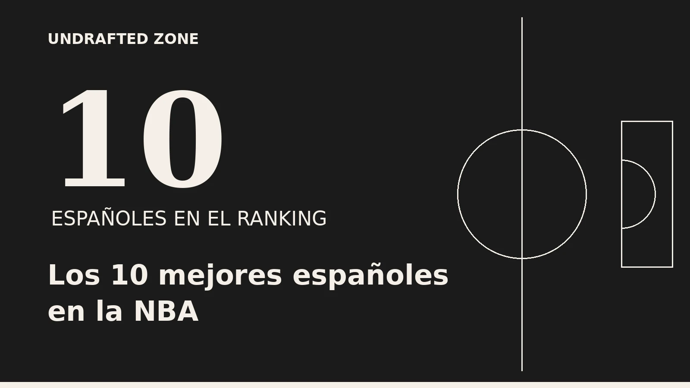

Los 10 mejores españoles en la NBA: un ranking con reparos
Pau y Marc Gasol, Ibaka, Rubio y otros siete nombres. Un ranking por impacto en la NBA, con dos nacionalizados señalados y nombres aún por verificar.

Un español en la NBA siempre llama la atención, porque durante mucho tiempo la liga parecía una puerta cerrada. Hoy hay nombres que han ganado anillos, premios defensivos y un sitio en los quintetos de la liga. Este ranking intenta ordenarlos, con un criterio que te explico antes de defender cada puesto, y con una advertencia que tiene que estar en el texto: no lo cierro como definitivo, porque hay jugadores de la generación anterior que todavía no he podido verificar.
El criterio: lo que hicieron en la NBA, sobre todo
El ranking pesa primero el impacto en la NBA: premios, participaciones en el All-Star, equipos All-NBA y All-Defensive, y títulos. Después, el papel en la historia de los españoles en la liga, incluidos los pioneros. Luego, la longevidad. Y lo que hicieron con la selección no cuenta para el ranking de la NBA, aunque lo cito cuando hace falta contexto.
Hay un matiz que pesa mucho. Algunos de los nombres de la lista no nacieron en España, sino que se nacionalizaron españoles. Lo digo en el texto y los dejo señalados, porque es una decisión de criterio y no un dato.
1. Pau Gasol, el que abrió la puerta
Pau Gasol fue elegido tercero en el draft de 2001, por los Hawks. Es el primer puesto de la lista por una razón simple: es el español con más impacto en la NBA. Dos veces campeón de la NBA, seis veces All-Star, dos veces en el segundo equipo All-NBA (2010 y 2014) y dos en el tercero (2008 y 2009). Fue Rookie del Año en 2001 y está en el primer quinteto de novatos de ese mismo año. Su número 16 está retirado por los Lakers.
Su historia fuera de la NBA también pesa. Fue MVP del Mundial de baloncesto en 2006, dos veces MVP del EuroBasket, y campeón de la liga española en tres ocasiones. Pero para este ranking lo que cuenta es lo que hizo en la liga, y en la liga es el primero.
2. Marc Gasol, el hermano que llegó tarde
Marc Gasol fue elegido en el puesto 48 de la segunda ronda de 2007, por los Lakers, y su carrera de élite se hizo en Memphis. Campeón de la NBA en 2019, tres veces All-Star, primer equipo All-NBA en 2014 y segundo en 2012, y Defensor del Año en 2012. Su número 33 está retirado por los Grizzlies.
Lo pongo segundo porque su impacto en la NBA es el de un pívot de élite con premios defensivos, y porque su carrera tiene la combinación que no se ha repetido en la historia de los españoles en la liga: un Defensor del Año y un anillo.
3. Serge Ibaka, nacionalizado y campeón
Serge Ibaka nació en Congo y se nacionalizó español. Lo pongo aquí porque su palmarés en la NBA es de los más sólidos del grupo: campeón de la NBA en 2019, tres veces en el primer quinteto All-Defensive entre 2011 y 2013, y dos veces líder de tapones de la liga, en 2011 y 2012. Después ganó la Bundesliga y la Copa alemana en 2024, y la Liga ACB en 2025.
Si este ranking es solo para nacidos en España, Ibaka sale. Yo lo dejo dentro con la explicación en el texto, y la decisión queda a Alejandro.
4. Ricky Rubio, el base que se adelantó a su tiempo
Ricky Rubio fue elegido quinto en el draft de 2009, por los Timberwolves. Su impacto en la NBA es menor que el de los cuatro primeros, pero su historia en Europa es larga: campeón de la EuroLeague en 2010, campeón de la EuroCup en 2008, campeón de la Liga ACB en 2011 y tres veces ganador de la Copa del Rey. Fue MVP del Mundial de baloncesto en 2019 y en el quinteto de novatos de la NBA en 2011.
Lo pongo cuarto porque el criterio pesa la liga, y aquí la NBA le da menos que a los dos Gasol y a Ibaka.
5. Nikola Mirotić, nacionalizado y de la Euroliga
Nikola Mirotić nació en Montenegro y se nacionalizó español. Fue elegido en el puesto 23 de la primera ronda de 2011, por los Rockets, y estuvo en el primer quinteto de novatos de la NBA en 2014. Pero su historia más grande está en Europa: MVP de la EuroLeague en 2022, dos veces en el primer equipo All-EuroLeague (2021 y 2022), campeón de la Liga ACB en 2013, 2021 y 2023, y MVP de las Finales de la Liga ACB en 2021 y 2023.
Lo pongo quinto con la misma advertencia que Ibaka: nacionalizado. Si el ranking es solo de la NBA, baja; si incluye lo que hizo en Europa, sube.
6. Willy Hernangómez, el pívot de la Liga ACB
Willy Hernangómez fue elegido en el puesto 35 de la segunda ronda de 2015, por los 76ers. Estuvo en el primer quinteto de novatos de la NBA en 2017, fue MVP del EuroBasket en 2022 y ganó dos ligas españolas (2013 y 2016). Su palmarés se reparte entre la NBA y la liga española.
7. Jorge Garbajosa, el alero que la NBA reconoció
Jorge Garbajosa fue elegido en el draft de 1999 y tuvo su reconocimiento en la NBA en 2007, con el primer equipo del quinteto de novatos de ese año. Su palmarés en Europa es amplio: primer equipo All-EuroLeague en 2003, segundo en 2006, campeón de la Liga ACB en 2006 con el premio de MVP de sus Finales, y dos veces campeón de la Copa italiana. Es el ejemplo de un jugador de élite europea que llegó a la NBA sin hacer ruido en la liga.
8. Juancho Hernangómez, el hermano que ganó en Grecia
Juancho Hernangómez fue elegido en el puesto 15 de la primera ronda de 2016, por los Nuggets. En la NBA su palmarés es menor que el de sus compañeros de lista, pero en Europa es campeón de la EuroLeague en 2024 y del campeonato griego en 2024, y en 2025 entró en el segundo equipo All-EuroLeague y fue líder de rebotes de la competición. Lo pongo octavo porque su impacto en la NBA es menor, aunque su carrera europea es de las más completas de la lista.
9. Santi Aldama, el ala-pívot de Utah
Santi Aldama fue elegido en el puesto 30 de la primera ronda de 2021, por los Jazz. Su palmarés es todavía corto: primer equipo de la Patriot League en 2021 y MVP del Europeo sub-18 en 2019. Lo pongo noveno porque es el jugador de la lista con menos recorrido en la NBA hasta ahora, y los contratos de primera ronda explican por qué algunos de estos jóvenes tardan en tener minutos, y su posición en el ranking puede subir en el futuro si sigue creciendo.
10. Usman Garuba, el defensor de la generación de 2021
Usman Garuba fue elegido en el puesto 23 de la primera ronda de 2021, por los Rockets. Su palmarés en Europa es más sólido que el de la NBA: dos veces campeón de la Liga ACB (2019 y 2025), campeón de la Supercopa española en 2020 y Rising Star de la EuroLeague en 2021. En la NBA su impacto todavía es limitado.
Los españoles que llegan a la liga cada verano también se miran en el repaso de la agencia libre de los Clippers. Lo pongo décimo porque la lista de españoles en la NBA es corta y porque, aunque su carrera en la liga todavía no ha pesado, sus premios europeos lo sitúan entre los que más prometen.
Quién se queda fuera, y por qué
Jaime Jaquez Jr. no entra porque no es español: es estadounidense. Sergi Llull no entra porque no ha jugado en la NBA. Y como cualquier ranking de la NBA, lo que se pague a cada uno en el tope salarial condiciona qué tipo de carrera puede hacer. Y hay nombres que faltan por verificar en mi material: José Calderón, Juan Carlos Navarro, Rudy Fernández, Sergio Rodríguez, Álex Abrines, Fernando Martín, el primer español en la NBA, y Raúl López. Son nombres que pueden cambiar el ranking, y por eso el ranking no es definitivo. Víctor Claver, Mirotić y Ibaka son los casos de la frontera: uno no tiene premios en la NBA, otros dos sí.
Preguntas frecuentes
¿Quién es el mejor español de la historia de la NBA?
Pau Gasol, en mi ranking. Dos veces campeón, seis veces All-Star y Rookie del Año en 2001.
¿Por qué entran Ibaka y Mirotić?
Porque se nacionalizaron españoles, y el criterio del ranking acepta a los jugadores que representan a España. Si el ranking se limita a nacidos en España, salen. Es una decisión de criterio.
¿Por qué no está Rudy Fernández?
Porque no he podido verificar sus datos en mi material. Entrará en la versión definitiva si sus cifras lo justifican.
¿Por qué no aparecen años de títulos?
Porque en el material que manejo algunos años no están verificados. Prefiero decir «campeón» antes que escribir un año que no puedo comprobar.